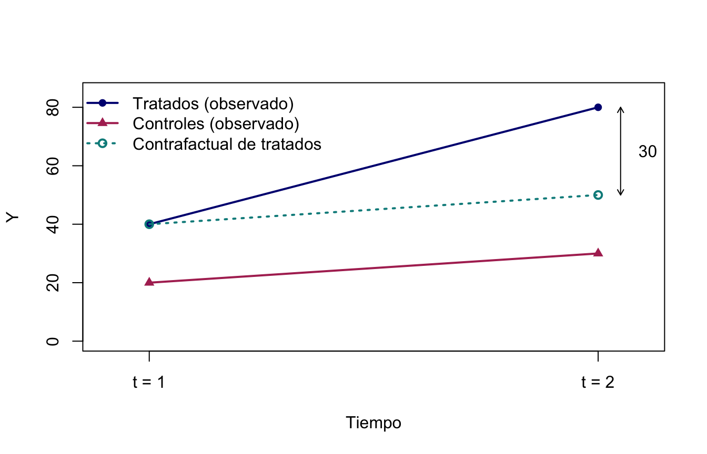

Capitulo 9 Diferencias en diferencias — Clase teórica
🎯 Metas de aprendizaje
- Entender el problema de identificación que DiD resuelve.
- Comprender el supuesto de tendencias paralelas y por qué es el corazón de la estrategia.
- Derivar el estimador DiD desde los resultados potenciales.
- Interpretar cada coeficiente de la regresión DiD.
- Saber cómo probar (y cómo fallar) el supuesto de tendencias paralelas.
- Reconocer los experimentos naturales clásicos que inauguraron el método.
Lecturas centrales
Experimentos naturales
Diferencias en diferencias nace de una idea más general: aprovechar experimentos naturales, situaciones en las que un evento fortuito divide a la población en tratados y no tratados sin que nadie lo haya diseñado como experimento. Las fuentes típicas de ese evento fortuito son cuatro:
- Un cambio en la naturaleza (un desastre, una sequía, una epidemia).
- Vaguedad en la ley, que hace que una regla se aplique a unos y no a otros.
- Cambios no esperados en la implementación de un programa.
- Aleatoriedad en las circunstancias individuales.
Intuición: en un RCT el investigador lanza la moneda; en un experimento natural la lanza el mundo. La tarea del econometrista es reconocer cuándo el mundo lanzó una moneda creíble — y qué comparación la aprovecha.
Contrafactuales falsos
Antes de definir el estimador conviene entender las dos comparaciones ingenuas que DiD corrige:
- Comparaciones antes y después: comparan a las mismas personas o comunidades antes y después del programa. Inconveniente: no controlan las tendencias temporales — cualquier cosa que hubiera pasado de todas formas se atribuye al programa.
- Comparaciones entre participantes y no participantes (con–sin): comparan a quienes están en el programa con quienes no están. Inconveniente: selección — ¿por qué no participaron los no participantes?
Suma de dos errores == correcto. La estimación de diferencias en diferencias combina los dos enfoques defectuosos — pre vs. post y con vs. sin — y, al hacerlo, puede superar simultáneamente el sesgo de selección (en atributos fijos) y las tendencias temporales del resultado de interés. La idea básica es observar al grupo de tratamiento y a un grupo de comparación antes y después del programa.
El problema que DiD resuelve
Suponga que quiere evaluar el efecto de un programa (subsidio, política, capacitación). El problema fundamental es que no podemos observar al mismo individuo tratado y no tratado al mismo tiempo.
La comparación más ingenua sería:
\[\text{Efecto aparente} = \underbrace{\bar{Y}_{\text{tratados}} - \bar{Y}_{\text{controles}}}_{\text{diferencia cruda}}\]
Pero esa diferencia puede existir incluso sin programa, simplemente porque los grupos eran distintos desde antes. Eso es sesgo de selección.
Una segunda idea: comparar el grupo tratado antes y después del programa:
\[\text{Efecto aparente} = \bar{Y}_{\text{tratados},\, t=1} - \bar{Y}_{\text{tratados},\, t=0}\]
Pero eso puede capturar cualquier cambio que hubiera ocurrido en ese periodo, con o sin programa (una recesión, una reforma, la maduración de los niños). Eso es el problema de la tendencia temporal.
DiD resuelve ambos problemas a la vez usando dos grupos (tratados y controles) y dos periodos (antes y después):
\[\widehat{\delta}_{DD} = \underbrace{(\bar{Y}_{T,1} - \bar{Y}_{T,0})}_{\text{cambio en tratados}} - \underbrace{(\bar{Y}_{C,1} - \bar{Y}_{C,0})}_{\text{cambio en controles}}\]
La lógica es: el cambio en el grupo de control nos dice cuánto habrían cambiado los tratados en ausencia del programa. La diferencia entre los dos cambios es el efecto del programa.
El caso de John Snow (1854)
El primer diferencias en diferencias célebre es anterior a la econometría. John Snow creía que el cólera se contagiaba por agua contaminada — no por el “aire viciado” de la teoría dominante — y usó un evento fortuito para probarlo.
La línea de tiempo:
- 1849: la peor epidemia de cólera en Londres se cobra 14.137 vidas. Dos empresas suministraban agua a gran parte de la ciudad — Lambeth Waterworks Co. y Southwark & Vauxhall Water Co. — y ambas la tomaban del Támesis.
- 1852: Lambeth Company movió su tubo de suministro río arriba, fuera del alcance de las aguas residuales. Todos sabían que el Támesis estaba sucio en el sur.
- 1853: Londres sufre otro brote de cólera. ¿Los clientes de Lambeth Waterworks son menos propensos a enfermarse?
Snow contrató a John Whiting para que visitara las casas de los fallecidos y determinara qué empresa les suministraba agua potable. Con esos datos calculó tasas de mortalidad por empresa:
| Empresa | Casas | Muertes por cólera | Tasa por 100 mil |
|---|---|---|---|
| Lambeth (tubo movido río arriba) | 26.107 | 98 | 37 |
| Southwark & Vauxhall | 40.046 | 1.263 | 315 |
| Resto de Londres | 256.423 | 1.422 | 56 |
Los clientes de Southwark & Vauxhall — cuyo suministro siguió contaminado — murieron a una tasa casi diez veces mayor que los de Lambeth, y fueron responsables de la gran mayoría de las muertes del brote de 1854 en Broad Street.
Interpretación: el cambio del tubo de Lambeth es el evento fortuito; los clientes de Southwark & Vauxhall son el grupo de comparación. Para que la comparación sea creíble se necesita mostrar evidencia de que, antes del cambio del tubo, las condiciones entre los dos grupos de clientes eran similares — exactamente la lógica que hoy llamamos tendencias paralelas.
El caso Mariel: migrantes y mercado laboral
Card (1990) estudió los impactos en el mercado laboral de los flujos de migrantes con el mismo diseño. El éxodo de Mariel llevó a Miami una ola de inmigrantes cubanos entre mayo y septiembre de 1980 — un evento fortuito desde la perspectiva del mercado laboral local. Card comparó a Miami con ciudades de altas tasas de migración (Atlanta, Houston, Los Ángeles y Tampa) y miró las condiciones laborales antes y después de la llegada.
La tabla clásica del caso (Angrist y Krueger) muestra las tasas de desempleo en Miami frente a las ciudades de comparación, antes y después del flujo — y repite el ejercicio con “el flujo de Mariel que no ocurrió” (1993–1995), un experimento placebo donde no debería encontrarse efecto alguno. El resultado célebre: a pesar del aumento de 7% en la fuerza laboral de Miami, las diferencias en diferencias no muestran deterioro para los trabajadores locales.
Otros ejemplos con la misma lógica: cambios en las leyes de salario mínimo (Angrist y Kugler), prohibiciones de fumar en Helena, Montana; cierres de hospitales (Levitt); desastres naturales; ataques terroristas; y variaciones exógenas en el tamaño de la familia (Angrist y Evans). En todos, el evento fortuito puede venir de asignación aleatoria directa (loterías: el servicio militar en Vietnam o Argentina, los vales educativos en Colombia) o de asignación as if random (la reasignación de policías tras un ataque terrorista, desastres naturales y elecciones, cambios en la ley de maternidad).
Intuición: la pregunta operativa nunca es “¿tengo dos grupos y dos periodos?” — casi siempre los hay. Es “¿qué evento fortuito hace creíble que el grupo de comparación revele la tendencia contrafactual del tratado?”. Sin ese evento, DiD es solo aritmética.
El ejemplo de aula: dos grupos, dos periodos
El siguiente ejemplo numérico — un caso histórico de clase, con valores fijados en las diapositivas — muestra por qué las dos comparaciones ingenuas fallan y cómo la doble diferencia las corrige. Hay un grupo de tratamiento y uno de control, observados en línea base (\(t=1\)) y seguimiento (\(t=2\)):
| Tratamiento | Control | DID | |
|---|---|---|---|
| \(t=1\) (línea base) | \(\bar{Y}_{T,1} = 40\) | \(\bar{Y}_{C,1} = 20\) | |
| \(t=2\) (seguimiento) | \(\bar{Y}_{T,2} = 80\) | \(\bar{Y}_{C,2} = 30\) | |
| Cambio | 40 | 10 | 30 |
Las tres lecturas posibles:
- Con–sin en \(t=2\): \(80 - 30 = 50\). Sobreestima: mezcla el efecto con la diferencia pre-existente entre grupos.
- Antes–después en tratados: \(80 - 40 = 40\). Sobreestima: atribuye al programa la tendencia temporal común.
- Diferencias en diferencias: \((80-40) - (30-20) = 30\). El cambio de los controles estima la tendencia contrafactual de los tratados.

Figure 9.1: Caso histórico de clase: el contrafactual punteado convierte 50 (con–sin) y 40 (antes–después) en el DiD de 30.
La tabla 2×2
La estructura de datos de DiD siempre se puede organizar en una tabla:
| Antes (\(t=0\)) | Después (\(t=1\)) | Primera diferencia | |
|---|---|---|---|
| Controles (\(D=0\)) | \(\bar{Y}_{C,0}\) | \(\bar{Y}_{C,1}\) | \(\bar{Y}_{C,1} - \bar{Y}_{C,0}\) |
| Tratados (\(D=1\)) | \(\bar{Y}_{T,0}\) | \(\bar{Y}_{T,1}\) | \(\bar{Y}_{T,1} - \bar{Y}_{T,0}\) |
| Segunda diferencia | — | — | \(\widehat{\delta}_{DD}\) |
La primera diferencia por fila elimina diferencias fijas entre grupos. La segunda diferencia (entre filas) elimina la tendencia temporal común.
Resultados potenciales y el ATT
Formalizamos con la notación de resultados potenciales:
- \(Y_{it}(D=1)\): resultado del individuo \(i\) en el periodo \(t\) si es tratado.
- \(Y_{it}(D=0)\): resultado del individuo \(i\) en el periodo \(t\) si no es tratado.
El efecto del tratamiento sobre los tratados (ATT) en \(t=1\) es:
\[\text{ATT} = E\!\left[Y_{i,1}(D=1) - Y_{i,1}(D=0) \mid D_i = 1\right]\]
El problema: \(Y_{i,1}(D=0)\) no se observa para los tratados después del tratamiento. Necesitamos un contrafactual.
DiD propone usar el cambio observado en los controles como estimación del cambio contrafactual en los tratados:
\[E\!\left[Y_{i,1}(D=0) - Y_{i,0}(D=0) \mid D_i = 1\right] \approx E\!\left[Y_{i,1}(D=0) - Y_{i,0}(D=0) \mid D_i = 0\right]\]
Esa igualdad es exactamente el supuesto de tendencias paralelas.
El supuesto de tendencias paralelas
Supuesto de tendencias paralelas (formal):
\[E\!\left[Y_{i,1}(D=0) - Y_{i,0}(D=0) \mid D_i = 1\right] = E\!\left[Y_{i,1}(D=0) - Y_{i,0}(D=0) \mid D_i = 0\right]\]
En ausencia del tratamiento, la evolución media del resultado en el grupo tratado habría sido idéntica a la del grupo de control.
¿Qué dice en palabras?
No se exige que tratados y controles sean iguales en el periodo base — pueden tener niveles diferentes. Lo que se exige es que sus tendencias habrían sido las mismas si el programa no hubiera existido.
¿Por qué es creíble?
El supuesto es más plausible cuando:
- Los grupos son similares en características observables.
- El programa no fue asignado en función de la tendencia reciente de \(Y\) (Ashenfelter’s dip: cuidado si los tratados fueron seleccionados porque estaban en declive).
- Los periodos pre-tratamiento muestran tendencias paralelas (evidencia empírica).
¿Qué lo viola?
- Diferencias en la tendencia de crecimiento entre grupos (ej: los tratados tenían un crecimiento más rápido de antemano).
- Shocks simultáneos que afectan solo a un grupo.
- Selección de participantes basada en la trayectoria reciente de \(Y\).
Identificación del ATT bajo tendencias paralelas
Bajo el conjunto de supuestos de identificación —tendencias paralelas, consistencia, ausencia de anticipación, composición estable y ausencia de interferencia relevante—, el estimador DiD recupera el ATT:
\[ \widehat{\delta}_{DD} = \underbrace{E[Y_{i,1} \mid D_i=1]}_{\bar{Y}_{T,1}} - \underbrace{E[Y_{i,0} \mid D_i=1]}_{\bar{Y}_{T,0}} - \underbrace{\Big(E[Y_{i,1} \mid D_i=0] - E[Y_{i,0} \mid D_i=0]\Big)}_{\text{tendencia de los controles}} \]
Sustituyendo resultados potenciales y usando consistencia, ausencia de anticipación y tendencias paralelas, bajo composición estable de los grupos y ausencia de interferencia relevante:
\[ = E[Y(D=1) - Y(D=0) \mid D=1] = \text{ATT} \]
Esta igualdad identifica el ATT bajo tendencias paralelas junto con los demás supuestos que conectan los resultados potenciales con los datos observados: consistencia, ausencia de anticipación, composición estable de los grupos y ausencia de interferencia relevante entre unidades. En particular, la notación \(Y_i(D=1)\)/\(Y_i(D=0)\) supone que el resultado potencial de cada unidad está bien definido por su propio estado de tratamiento.
La regresión DiD
El estimador de las cuatro medias se puede recuperar exactamente con:
\[Y_{it} = \alpha + \beta D_i + \gamma t_t + \delta (D_i \times t_t) + \varepsilon_{it}\]
Interpretación de cada coeficiente:
| Coeficiente | Significado |
|---|---|
| \(\alpha\) | Media de los controles en el periodo base (\(\bar{Y}_{C,0}\)) |
| \(\beta\) | Diferencia pre-tratamiento entre grupos (\(\bar{Y}_{T,0} - \bar{Y}_{C,0}\)) |
| \(\gamma\) | Cambio temporal en los controles (\(\bar{Y}_{C,1} - \bar{Y}_{C,0}\)) |
| \(\delta\) | Estimador DiD; es el efecto causal del programa solo bajo el conjunto de supuestos de identificación indicado arriba |
El coeficiente que importa es \(\delta\), el de la interacción \(D \times t\). Los coeficientes \(\beta\) y \(\gamma\) por sí solos no tienen interpretación causal.
Equivalencia algebraica: Los cuatro promedios se recuperan así:
\[\bar{Y}_{C,0} = \hat{\alpha}, \quad \bar{Y}_{T,0} = \hat{\alpha}+\hat{\beta}, \quad \bar{Y}_{C,1} = \hat{\alpha}+\hat{\gamma}, \quad \bar{Y}_{T,1} = \hat{\alpha}+\hat{\beta}+\hat{\gamma}+\hat{\delta}\]
Prueba de tendencias paralelas
El supuesto de tendencias paralelas no es verificable en el periodo de tratamiento: el contrafactual \(Y_{it}(D=0)\) para los tratados en \(t=1\) no existe. Solo podemos buscar evidencia indirecta.
Con múltiples periodos pre-tratamiento, podemos comparar las tendencias
medias previas de tratados y controles. Esta evidencia no requiere seguir a la
misma unidad: cortes transversales repetidos con composición estable también
permiten examinar pre-tendencias. El ejemplo de Stata que sigue usa
xtdidregress y, por ser un comando para datos agrupados longitudinalmente,
requiere identificar el grupo de panel. Sus dos pruebas posteriores son
distintas — y es importante no confundirlas:
Prueba de tendencias paralelas: estat ptrends
H₀: Las tendencias lineales son paralelas en el periodo pre-tratamiento.
Lo que hace internamente: estima una regresión sobre los periodos pre-tratamiento con una interacción tratado × tiempo (como variable continua) y prueba si ese coeficiente es cero. Si se rechaza H₀, hay evidencia de que los grupos ya tenían pendientes distintas antes del programa.
Esta es la prueba de tendencias paralelas propiamente dicha.
Prueba de anticipación: estat granger
H₀: No hubo efectos del tratamiento en anticipación (antes de que empezara).
Lo que hace internamente: construye indicadores de “leads” — una variable por cada periodo pre-tratamiento que toma valor 1 si el grupo es tratado y el tiempo ya superó ese umbral. Incluye todos esos indicadores en una regresión y los prueba conjuntamente con un F-test acumulado.
Diferencia clave entre las dos pruebas:
| Prueba | H₀ | ¿Qué detecta si se rechaza? |
|---|---|---|
estat ptrends |
Tendencias lineales iguales antes del tratamiento | Tendencias pre-existentes distintas entre grupos |
estat granger |
Sin efectos anticipados del tratamiento | Que los agentes cambiaron su comportamiento antes de que empezara el programa |
Son preguntas distintas. Un rechazo en ptrends no implica anticipación, y un rechazo en granger no implica que las tendencias no eran paralelas. Siempre se necesita un argumento teórico para interpretar cuál es el problema.
Visualización: estat trendplots y estat grangerplot
trendplots es el gráfico diagnóstico de tendencias. grangerplot es el event study completo con los efectos por periodo y sus intervalos de confianza. Ambos se ejecutan en la clase práctica sobre la base hospdd, junto con las dos pruebas formales.
Restricción técnica: el código fuente de Stata exige al menos 2 periodos pre-tratamiento para correr estat ptrends o estat granger. Con solo un periodo antes del tratamiento, ambas pruebas fallan con error. En nuestra base (1 periodo antes, 1 después), estas pruebas no son ejecutables.
Con solo dos periodos (como en nuestra base):
Con un único periodo antes y uno después, la prueba formal de pre-tendencias es imposible. El gráfico de tendencias medias que construimos en Stata es una visualización del DiD, no una prueba del supuesto. Para examinar pre-tendencias se necesitan al menos dos periodos pre-tratamiento. Esto puede hacerse con un panel o con cortes transversales repetidos cuya composición sea comparable a través del tiempo; no se necesita un identificador individual para comparar tendencias medias.
Amenazas adicionales a la validez
Además de la violación de tendencias paralelas, DiD puede fallar por cuatro razones principales:
1. Políticas simultáneas
Si durante el mismo periodo ocurre otro evento o política que afecta solo a uno de los dos grupos, el cambio que atribuimos al programa puede ser en realidad causado por ese otro factor.
Ejemplo: Evaluamos un programa de empleo para madres en una ciudad. Al mismo tiempo, esa ciudad anuncia una inversión en guarderías públicas. El grupo tratado mejora, pero no podemos saber cuánto fue el programa y cuánto fueron las guarderías.
¿Cómo detectarlo? Revisando el contexto histórico y verificando que no hubo shocks diferenciales entre grupos durante el periodo de evaluación.
2. Causalidad inversa
El supuesto de tendencias paralelas puede fallar si la selección al tratamiento depende de la trayectoria pasada del resultado. Si los participantes fueron elegidos (o se autoseleccionaron) precisamente porque su resultado estaba cayendo, habrían subido de todas formas sin el programa — lo que se conoce como el dip de Ashenfelter.
Ejemplo: Un programa de capacitación laboral selecciona trabajadores que recientemente perdieron el empleo. Su tasa de empleo era baja antes del programa, pero habría subido naturalmente con el tiempo. DiD sobreestima el efecto.
¿Cómo detectarlo? Con múltiples periodos pre-tratamiento: si el grupo tratado ya tenía una tendencia ascendente antes del programa, el dip es visible.
3. Spillovers (efectos de derrame)
Si el tratamiento de algunos individuos afecta el resultado de quienes están en el grupo de control, el contrafactual queda contaminado. El grupo de control ya no representa lo que le habría pasado al grupo tratado sin el programa.
Ejemplo: Un subsidio a la contratación en empresas tratadas puede desplazar trabajadores desde empresas de control hacia las tratadas. El empleo en control baja no porque el programa fracase, sino porque los trabajadores se mueven. DiD subestima el efecto real.
¿Cómo detectarlo? Verificando que tratados y controles estén suficientemente separados geográfica o institucionalmente para que no haya interacciones.
4. Anticipación
Si los agentes saben que el programa llegará, pueden cambiar su comportamiento antes de que empiece. Esto hace que el periodo “antes” del tratamiento ya esté contaminado, y el estimador DiD subestima el efecto verdadero.
Ejemplo: Se anuncia en enero un subsidio a la inversión que entrará en vigor en julio. Las empresas tratadas empiezan a invertir desde enero. En julio, la diferencia pre-post parece pequeña, aunque el programa tuvo un efecto real desde el anuncio.
¿Cómo detectarlo y corregirlo? Redefinir la fecha de tratamiento como la fecha del anuncio, no la de implementación. Con event studies, los coeficientes pre-tratamiento serán distintos de cero si hay anticipación — pero esto es observacionalmente equivalente a tendencias no paralelas (ver sección anterior).
5. Cambios en la composición de los grupos
Si el tratamiento cambia quién permanece en la muestra (atrición diferencial), las medias post-tratamiento ya no son comparables. Por ejemplo, si el programa provoca que los participantes más débiles abandonen el programa, el promedio post-tratamiento mejora mecánicamente.
¿Cómo detectarlo? Comparando tasas de atrición entre tratados y controles, y analizando si las características de los que se van difieren entre grupos.
Síntesis
| Componente | ¿Qué elimina? | ¿Qué supone? |
|---|---|---|
| Primera diferencia (dentro de grupos) | Diferencias fijas entre grupos | Grupos observables |
| Segunda diferencia (entre grupos) | Tendencia temporal común | Tendencias paralelas |
| DiD | Ambas | Tendencias paralelas |
El supuesto de tendencias paralelas no es verificable en el periodo de tratamiento. Con múltiples periodos pre-tratamiento puede buscarse evidencia indirecta vía event study, pero con solo dos periodos eso es imposible.
Las principales amenazas a la validez del DiD son: (1) políticas simultáneas que afectan diferencialmente a los grupos, (2) causalidad inversa o dip de Ashenfelter, (3) spillovers que contaminan el grupo de control, (4) anticipación que contamina el periodo base, y (5) atrición diferencial entre grupos.
✍️ Preguntas de reflexión
- Calcula el estimador DiD a mano con las cuatro medias de la tabla y verifica que coincide con el coeficiente de la interacción en la regresión.
- ¿Por qué no podemos interpretar causalmente la diferencia cruda entre tratados y controles en \(t=1\)?
- ¿Qué patrón esperarías ver en el gráfico de tendencias si el supuesto de tendencias paralelas se viola?
- ¿Qué diferencia hay entre lo que prueba
estat ptrendsy lo que pruebaestat granger? ¿Por qué importa distinguirlas?
Preguntas tipo examen
Resuelve las tres preguntas siguientes. Cada una es autocontenida e incluye el puntaje sugerido y el producto esperado; no se entregan respuestas ni pistas.
Código: DID-T1
Tipo: Contrafactuales falsos y tabla 2×2
Enunciado: Un programa municipal de empleo juvenil se implementa en la comuna A y no en la comuna B. La tasa de ocupación juvenil observada es: comuna A, 55% antes y 70% después; comuna B, 35% antes y 44% después. Calcule la comparación con–sin en el periodo final, la comparación antes–después en la comuna tratada y el estimador de diferencias en diferencias. Explique qué problema tiene cada una de las dos comparaciones ingenuas y qué componente elimina cada resta del DiD. Indique el conjunto de supuestos bajo el cual el DiD es el efecto causal del programa.
Puntaje sugerido: 5 puntos.
Producto esperado: los tres cálculos numéricos, la identificación del sesgo de cada comparación ingenua y el enunciado preciso del supuesto de identificación.
Código: DID-T2
Tipo: La regresión DiD y sus coeficientes
Enunciado: Considere la regresión \(Y_{it} = \alpha + \beta D_i + \gamma t_t + \delta (D_i \times t_t) + \varepsilon_{it}\) estimada con dos grupos y dos periodos. Derive la expresión de cada coeficiente en términos de las cuatro medias de la tabla 2×2 y demuestre que el coeficiente de la interacción reproduce exactamente la doble diferencia. Explique por qué \(\beta\) y \(\gamma\) no tienen interpretación causal, y qué cambiaría en la lectura de \(\delta\) si las tendencias de los dos grupos no fueran paralelas.
Puntaje sugerido: 5 puntos.
Producto esperado: la correspondencia algebraica completa entre coeficientes y medias, la demostración de la equivalencia y la discusión de la interpretación causal.
Código: DID-T3
Tipo: Tendencias paralelas, pruebas y amenazas
Enunciado: Un programa de capacitación selecciona municipios cuyo empleo venía cayendo en los tres años previos. Un colega propone validar el diseño DiD mostrando que el empleo pre-programa tenía niveles similares entre municipios tratados y de control. Evalúe la propuesta: distinga entre balance en niveles y tendencias paralelas; explique qué patrón esperaría encontrar en una prueba tipo estat ptrends y en una tipo estat granger dada la regla de selección descrita; y explique por qué un rechazo en la prueba de anticipación es observacionalmente equivalente a tendencias no paralelas. Concluya con la amenaza específica que este diseño enfrenta y una estrategia para mitigarla.
Puntaje sugerido: 5 puntos.
Producto esperado: la distinción balance/tendencias, la predicción razonada para cada prueba, el argumento de equivalencia observacional y la amenaza identificada con su mitigación.
Puente a la clase práctica
En la siguiente clase implementamos todo lo anterior en Stata con base3.dta: la tabla 2×2, el estimador manual, el comando diff y la regresión con interacción. También presentamos la equivalencia teórica en primeras diferencias para un panel genuino y, con la base hospdd, el estimador con múltiples periodos y las pruebas formales estat ptrends y estat granger. Continúa en el Capítulo 10.